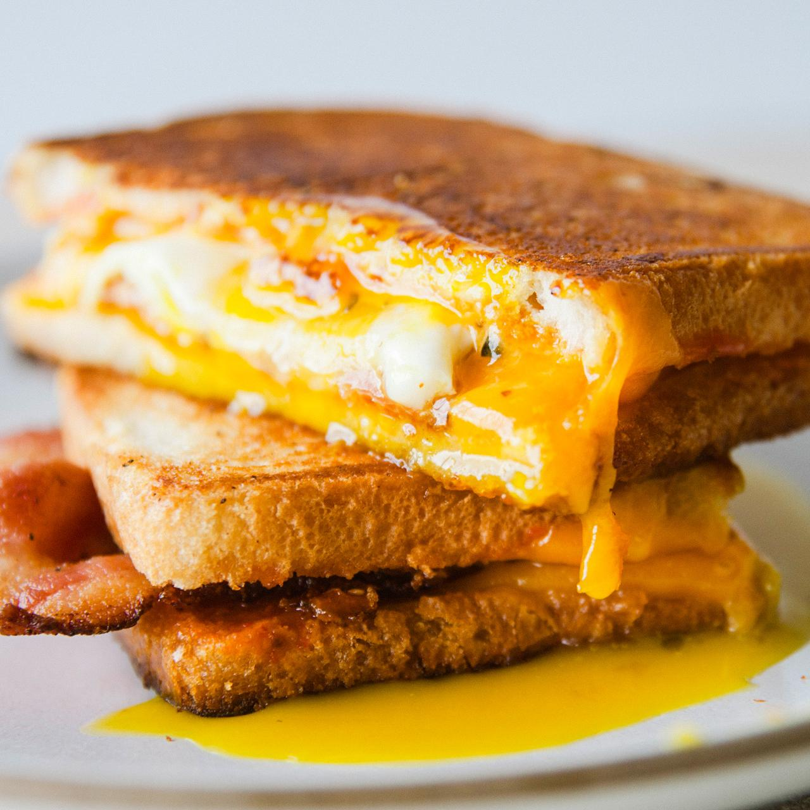

An egg sandwich is an internationally popular breakfast staple that typically consists of eggs between slices of bread. The sandwich is usually enriched with cheese, and it's often complemented with some kind of meat such as cold cuts or sausage meat. These days, the additions to the egg sandwich include ingredients such as avocados, bacon, pork roll, chicken, or watercress.
Meal prep time : 25 minutes
Servings : 4